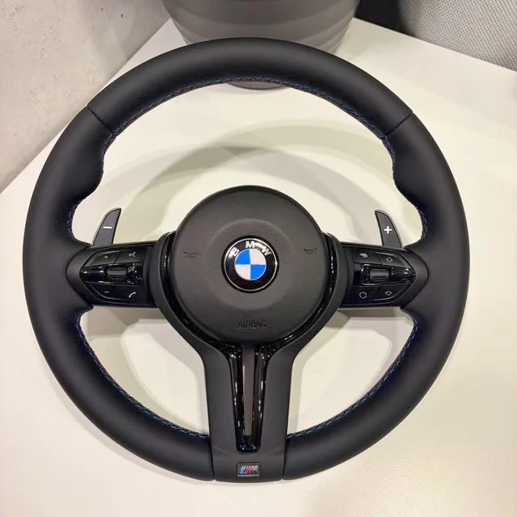
Рули BMW E-серия
В каталоге 17 рулей для BMW E-серии. У каждого есть реальные фотографии, цена «от» и комплектации. Выберите свой кузов, чтобы увидеть подборку, или пролистайте весь список.
Рули E-серии доступны под заказ, срок около трёх недель, точный срок подтверждает менеджер. Цены указаны для группы «Другие кузова E». Совместимость подтверждаем перед заказом по кузову, году и фото вашего штатного руля.
В Telegram откроется готовое сообщение: «Хочу руль: BMW E-серия».
Выберите кузов
Все рули (17)
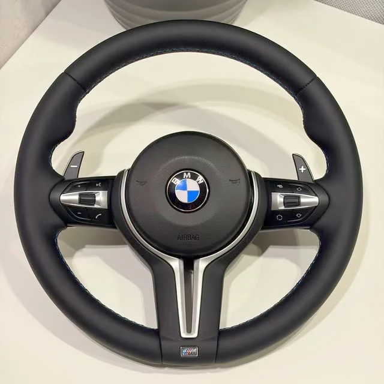
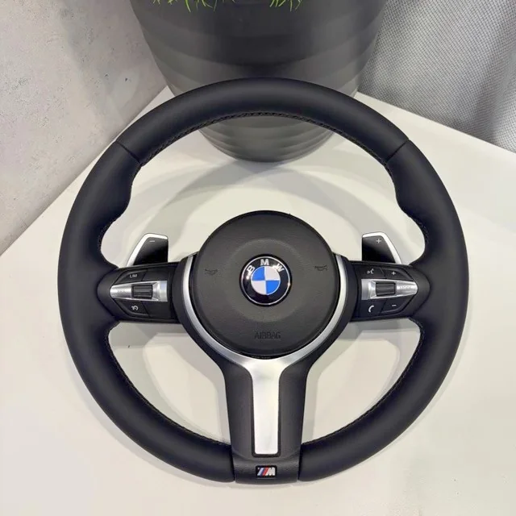
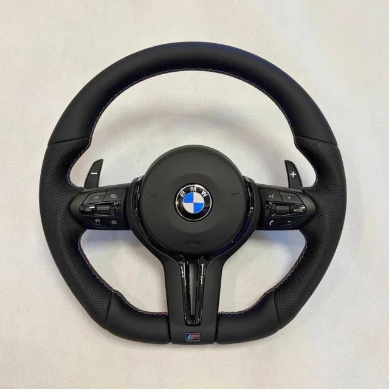
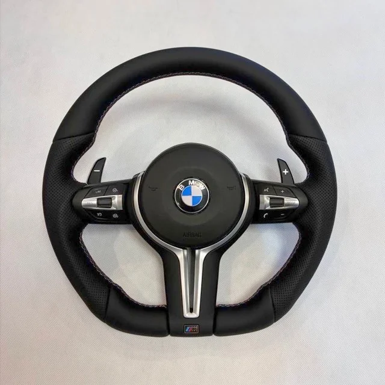
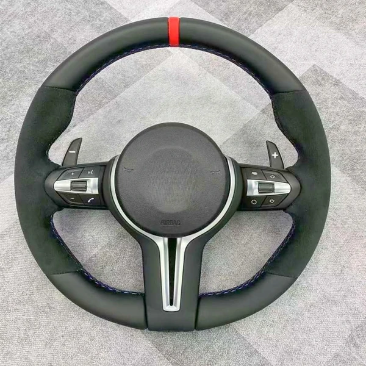
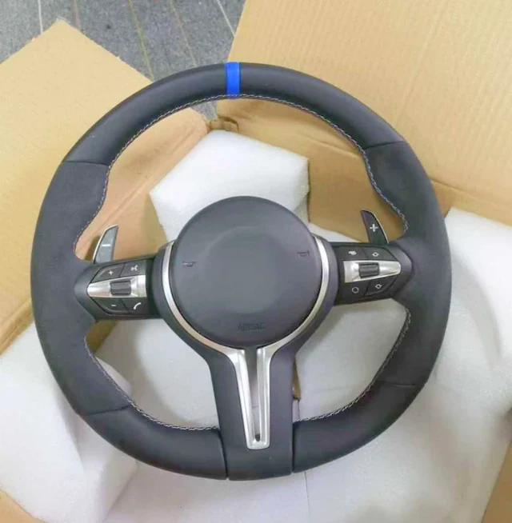
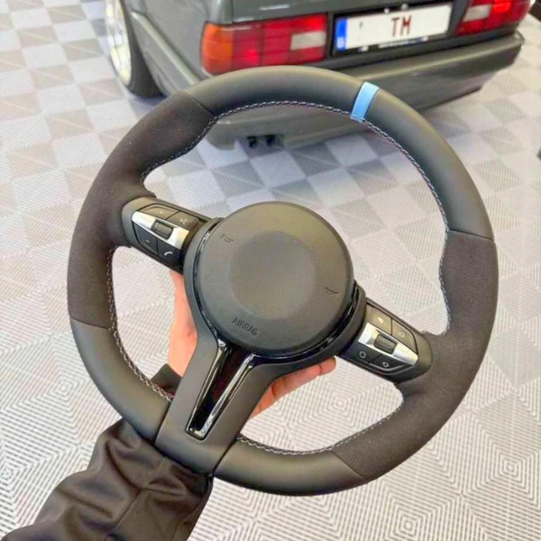
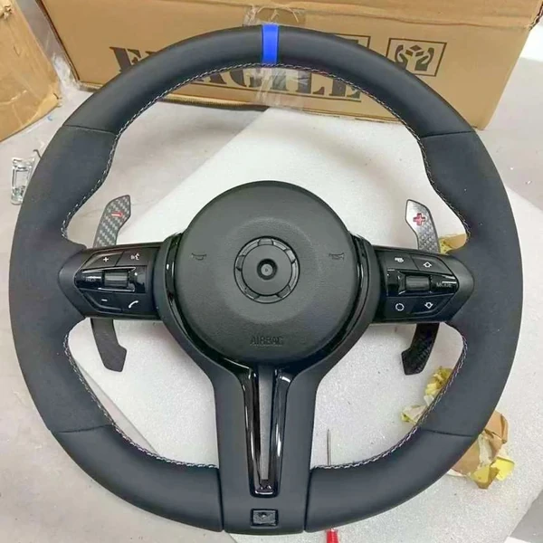
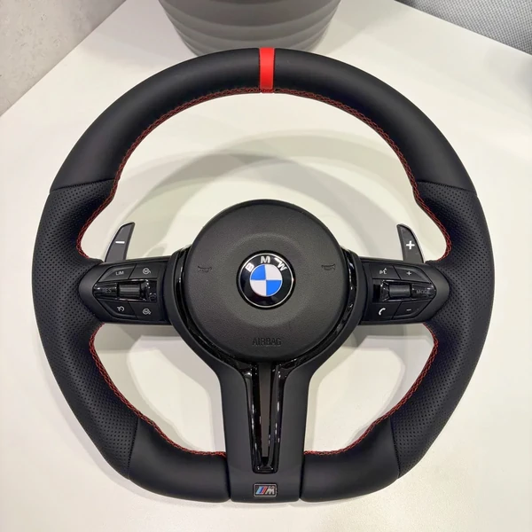
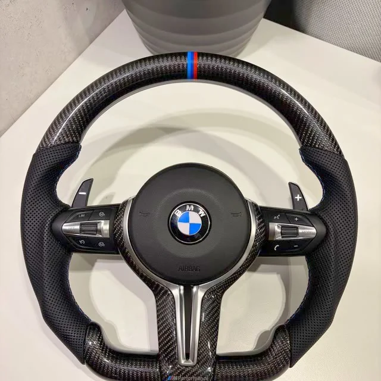
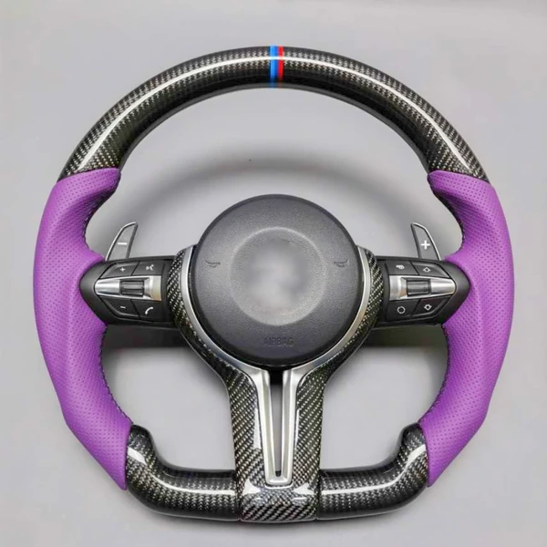
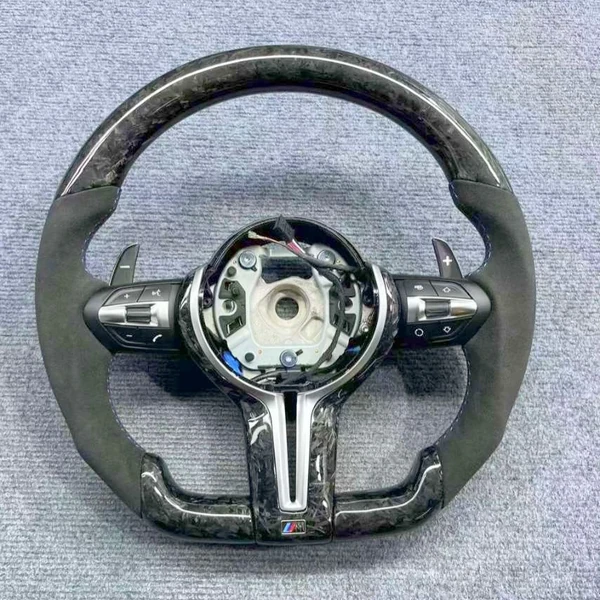
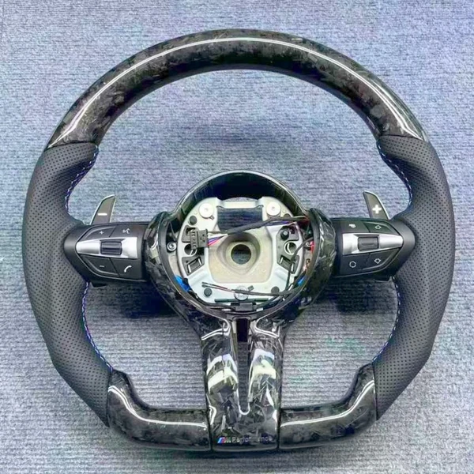
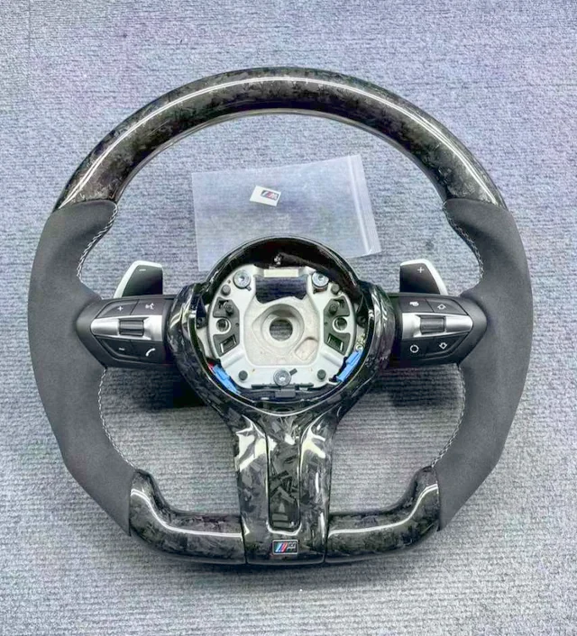
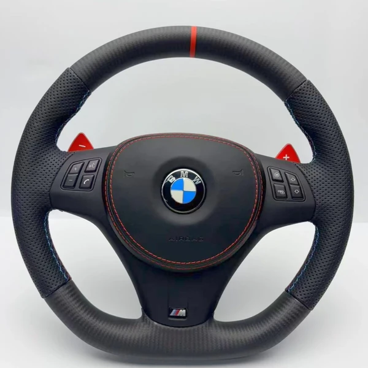
Под заказ
Руль № E16
Матовый карбон + перфорированная кожа, красная метка, красные лепестки, М-прострочка
от 45 900 ₽
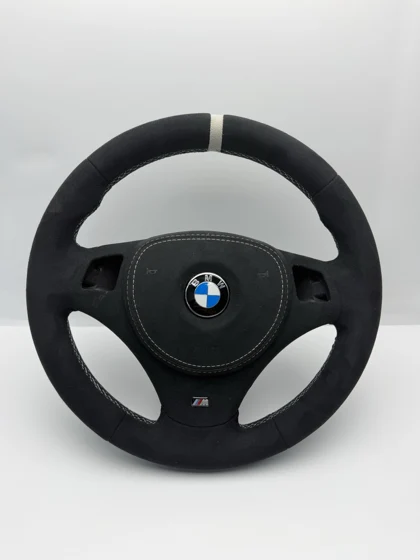
Функции и доплаты
| Вибрация | выбирается в заявке; стоимость подтверждает менеджер |
|---|---|
| Круиз-контроль | выбирается в заявке; стоимость подтверждает менеджер |
Для отдельных рулей с карбоном или LED-экраном опции и цены указаны на странице самого руля. Установка нового руля сама по себе не добавляет подогрев, вибрацию или адаптивный круиз: выбор функции — пожелание к комплектации, возможность дооснащения обсуждается отдельно.
Доставка и оплата
- Доставка по России и в другие страны (отправляем во все страны, где есть СДЭК).
- Самовывоз в Одинцово, 24/7 — договоритесь с менеджером о времени.
- Предоплата 3 000 ₽ (5 000 ₽ для рулей от 50 000 ₽), остальное при получении.
- Срок: под заказ около трёх недель.
- Руль из наличия отправляем в день заказа, оплата при получении.
- Гарантия на руль — 6 месяцев.
Частые вопросы
Сколько стоит руль?
В каталоге цены начинаются от 11 900 ₽. Цена указана «от», точную сумму для вашей комплектации назовём в Telegram.
Сколько ждать?
Под заказ около трёх недель. Рули из наличия (если есть) отправляем в день заказа.
Нужна ли предоплата?
Да: 3 000 ₽, для рулей от 50 000 ₽ — 5 000 ₽.
Как проверить совместимость?
Пришлите менеджеру кузов, год и фото штатного руля — крепление, кнопки и разъёмы проверяем до заказа.